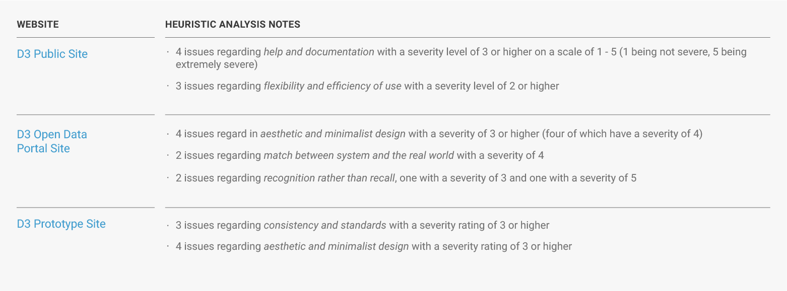
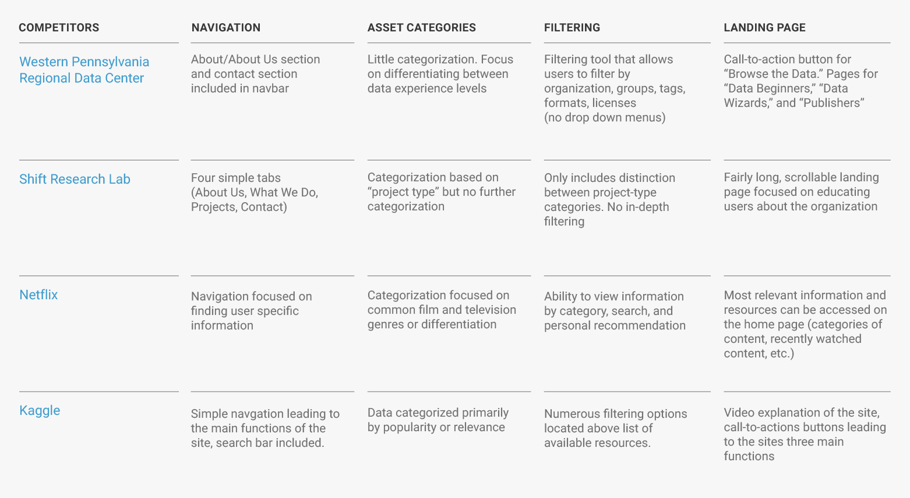

Data Driven Detroit Designing for a smarter city
Client project for Data Driven Detroit with respect to their efforts of redesigning their public-facing website
User Experience Research User Experience Design Interaction Design Visual Design
Four UX students Two D3 team members


The Project
People need an easier way to access and understand open data for Detroit, MI so they can make data-informed decisions and play a larger role in the development of the city. My team’s role: design the library where this open data is stored and accessed, known as the Toolbox.The Problem
Detroit, Michigan is in a stage of growth where decisions regarding the development of the city can have a vast impact on how the city functions in the future. Uninformed decisions regarding development, services, amenities, education and so on can adversely affect how the city moves forward. Data Driven Detroit (D3) is on a mission to foster Detroit as a smart city. D3’s goal is to empower informed decision making in Detroit through the use of accurate, reliable, and unbiased data. The first step in doing this is to design a comprehensive, scalable library for open data to be stored and accessed by the public and professional organizations. D3 calls this their Toolbox.
My Role
My team’s job: design this Toolbox. Made up of four UX students from the University of Michigan School of Information, my team worked directly with D3 to design their Toolbox with a focus on comprehension and scalability in order to help users better understand the function and capabilities of the data and resources that are offered.
Detroit Data Utility
In addition to our work with D3, my team worked collaboratively with teams from the Stephen M. Ross School of Business, the School of Social Work at the University of Michigan, and numerous faculty members from U of M to plan and design solutions for a city-wide data coalition in Detroit, currently titled "Detroit Data Utility." This coalition, made up of approximately 20 organizations around Detroit, works to plan how open data is accessed and used to promote informed decision making in Detroit. Our work with D3 is used to guide our planning and design efforts with this larger initiative.
The Process: Research Phase
Starting with heuristic, competitive, and user research, we were able to identify 4 key pain points of D3’s existing Toolbox designs to create 3 personas and develop 6 design requirements that would guide our design process.Researching Three Websites
At the time of this project, D3 offered three versions of their website to research.

Preliminary Research
Before we began ideating and designing new solutions for the Toolbox, we used research methodologies to identify key pain points and develop design requirements that would guide our future design process. Though heuristic evaluation (following the guides laid out by Nielsen Norman Group’s “10 Usability Heuristics for User Interface Design”) and competitive analysis, we were able to better understand the most apparent pain points of D3’s toolbox and how other competitors, direct and indirect, approach these problems. Initial findings are displayed below:
 Necessary Validation
It is important to note that these ratings are subjective and we used usability tests and interviews to validate the severity of each issue we discovered. In addition, later competitive analysis during the design phase allowed us to hone in on specific design problems and examine how other sites solve these problems.
Usability Testing
In order to validate the pain points we discovered in our preliminary research, we ran user tests on D3’s sites. Though D3’s data primarily focuses on the Metro Detroit area and therefore would be most relevant to Detroit residents, we decided to conduct our usability tests with Ann Arbor residents due to convenience for recruiting and scheduling. We realize this convenience sampling may have introduced bias.
Our team recruited participants for the three user groups, conducting five tests in total:
Urban Planners
- A faculty member of the Taubman College of Architecture and Urban Planning at the University of Michigan
Individuals that regularly work with data
- A senior at the University of Michigan studying Information Analytics
- A senior at the University of Michigan studying Statistics and Psychology
Individuals interested in community information but with little/no data experience
- A sophomore at the University of Michigan studying Communications
- A senior at the University of Michigan studying English
Personas
From our identified user groups and our research findings, we developed three personas that guided our design decisions as we moved forward.

Key Findings
After completing our research phase, we compiled all of the information we gathered and listed our key findings.

Design Requirements
With our key findings in mind, we developed design requirements that would guide the rest of our project.

The Process: Design Phase
We needed to 1. build a hierarchy of information that allows users to skim through resources but also have enough information to understand each resource further and 2. create a filtering system for these resources that users will notice and feel inclined to use.Brainstorming Design Challenges
To begin our design phase, we held brainstorming sessions to list and organize the primary design issues we needed to solve to address our design requirements. In the end, we identified two main problems we needed to design for.
 Design Challenge 1: D3’s existing designs for their toolbox did not provide enough relevant information so that users could skim through listed resources but also have enough information to understand each resource further
Design Challenge 1: D3’s existing designs for their toolbox did not provide enough relevant information so that users could skim through listed resources but also have enough information to understand each resource further
Building a Hierarchy of Resource Information
The point of the Toolbox is not to make informed decisions using data and information, but rather promote informed decision-making by providing a simple access point to this data and information. With this, we need build a hierarchy of information to allow quick skimming of resources along with the ability to easily find more granular information about each resource.
D3's Sites Lacked Relevant Information for Resources


Taking inspiration from D3’s Open Data Portal
D3’s Open data portal provided the most relevant information. We noted that of the three existing designs, the Open Data Portal was the only one to use a horizontal listing design for each resource. This horizontal design seemed to offered more space for relevant information.

Wireframes
Moving forward, we created more detailed paper and digital wireframes, allowing for more detailed views of design components in the context of the full webpage. Using these wireframes, informal user testing allowed us to ensure that the design ideas that we had been working with did indeed fulfill our design requirements.

Paper Prototype
From our digital wireframe, we created a paper prototype that allowed potential users to interact with our design for D3’s toolbox. With informal user testing, we had people to interact with the site as if they were simply browsing the site and exploring the content. We noted qualitative feedback to get a better understanding of how people interacted with and felt about the design.

High-Fidelity Prototype
First Iteration

Validation
With our digital prototype, we were able to run 8 formal user tests to validate that users were able to more efficiently and comprehensively use our prototype in comparison to D3’s other sites. We measured completion time for three tasks and difficulty of completing these tasks. The tasks were customized depending on which of our three user groups the tester aligned with. We found that our prototype outperformed D3 sites in both completion time and ease of completion for all of the tasks we tested.
Second Iteration
While our prototype did outperform D3 sites in terms of quantitative metrics, qualitative feedback led us to make adjustments to our final prototype.
Final Recommendations
While our work on this project demonstrated a full process of research and design, a large part of the deliverables of this project was to provide D3 with a list of UX recommendations supported by our research. Due to technical constraints developing the redesigned site, D3 would use these recommendations to implement our work with the development capabilities they have rather than directly replicating the final design we created.
1. Feature popular/useful resources at the top
2. Use colors to visually distinguish resources
3. Present important information in a scannable manner
4. Have category buttons filter results list
5. Show examples of possible filters on left
6. Avoid data jargon
7. Put the most important information at the top of the page (so a user can see it without scrolling)
8. Provide more guidance to users on the home page
9. Change the colors used in your Wordpress theme to match your brand colors